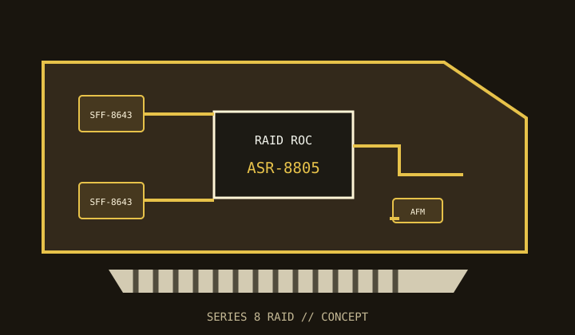

[ INDIVIDUAL COMPONENT // STORAGE / DISK I/O ]
Microchip Adaptec RAID ASR-8805
Eight internal SAS/SATA lanes and hardware RAID in the Adaptec Series 8 PCIe Gen3 adapter family.

MODEL SCOPE: Adaptec RAID ASR-8805. Check board revision, AFM-700 availability, exact firmware and supplied bracket before service.
Reference specifications
| Controller | Adaptec Series 8 RAID-on-Chip controller. |
|---|---|
| Host bus | PCI Express 3.0 x8. |
| Ports | Eight internal lanes through two SFF-8643 Mini-SAS HD connectors. |
| Protocols | SAS 12 Gb/s and SATA 6 Gb/s; both legacy link rates negotiate when supported by the attached drive. |
| RAID / HBA mode | Hardware RAID 0, 1, 1E, 5, 6, 10, 50 and 60; supported raw/JBOD presentation is firmware- and configuration-dependent. |
| Cache / protection | 1 GB DDR3 cache; optional Adaptec Flash Module AFM-700 provides flash-backed cache protection. Do not assume the module is bundled with a used card. |
| Firmware / OS | Use Microchip's Adaptec Series 8 firmware, maxView / ARCCONF tools and a driver listed for the target OS. Check archived Windows/Linux/hypervisor compatibility for this legacy generation. |
| Drive / backplane caveats | Check Mini-SAS HD cable map, drive sector format, expander firmware, backplane power and cooling. A SAS expander does not make SATA drives dual-path capable. |
Compatibility and service notes
- Use AFM-700 cache protection in the manner prescribed by the Series 8 manual before enabling protected write-back.
- Legacy drivers and management software may not support modern OS releases; test the exact deployment image first.
- Array import and migration depend on controller generation and firmware. Preserve a verified backup before replacement.
Sources & further reading
- Microchip — Adaptec RAID ASR-8805 product and support pageManufacturer product entry for model details, firmware and documentation.
- Microchip — maxView Storage Manager User GuideOfficial Adaptec storage management and array configuration reference.
- Microchip — Adaptec RAID and SAS product supportManufacturer support resource for archived firmware, drivers and product documentation.